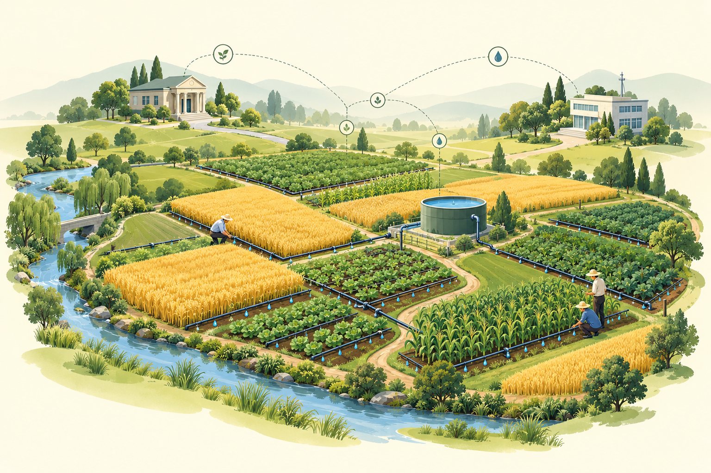

理解农户如何选择
结合农户画像、预期收益、融资条件与邻里影响，输出安装节水设施的采纳倾向，驱动大规模农户决策。
画像与环境采纳倾向 p / 1−p
行为决策引擎结构化概率，逐户响应

让每一户的选择，与政策和融资相互影响。
结合农户画像、预期收益、融资条件与邻里影响，输出安装节水设施的采纳倾向，驱动大规模农户决策。
行为决策引擎结构化概率，逐户响应
由 DeepSeek 读取环境和经营结果，为农商行评估授信与利率，为地方水利局制定下一季水价与补贴。
策略推理引擎决策可读取，依据可追溯
从田头出发，连接信贷，再反馈到区域治理。
这一季，要不要安装？
权衡家底、收益与风险；现金优先支付，融资缺口向本村银行申请贷款。
田头选择安装、经营、用水与还贷
这笔贷款，能否偿还？
结合偿债能力、年龄与操作能力逐户审批，在可贷资金内确定授信与利率。
融资支持贷款决定采纳能否落地
下一季，怎样推动节水？
读取本季用水与采纳结果，调整下季水价和补贴，并与其他地区开展配额互助。
区域反馈新政策成为下一季的环境
每季结算现金、设备与用水，更新共同环境。你可以沿田块、决策记录与趋势曲线，回看整个反馈过程。